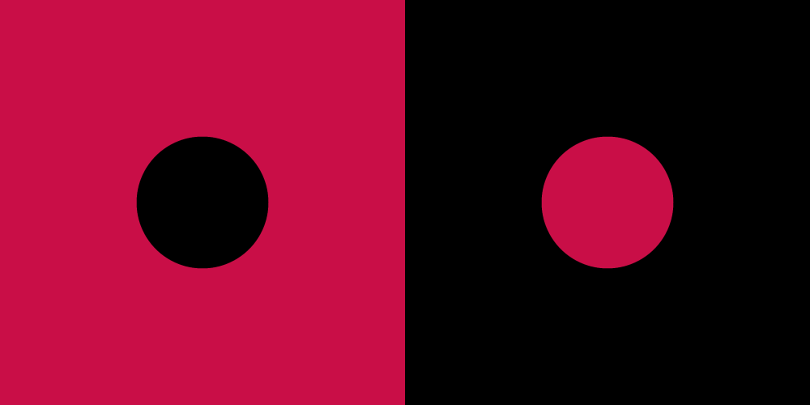

일상의 슈발츠발트에서는 SCH WHITE(#FFFFFF)와 SCH BLACK(#000000)을 사용
화려한 성격의 이벤트와 관련된 경우 SCH BLACK과 SCH RED를 사용하며 잔잔한 성격의 이벤트와 관련된 경우 SCH WHITE와 SCH GOLD를 사용
배경색이 SCH WHITE일 때
그래픽 요소는 SCH BLACK / SCH GOLD,
정보는 SCH BLACK을 사용
배경색이 SCH BLACK일 경우 그래픽 요소는 SCH WHITE / SCH WINE, 정보는 SCH WHITE를 사용
예외로 본문이 없는 경우 배경색에 컬러 사용 가능
메인 키비주얼을 중심으로 다른 조형 요소가 배치된다.
실제 판매하는 디저트 및 음료 사진 사용

카페 내외부 모습 사진, 카페의 이벤트와 관련해 인물이 함께 있는 사진
서브 키비주얼과 함께 사용 시, 주요 개체의 일부를 서브 키비주얼이 가리면서 유추가 가능하도록 사이즈 조정 필요
메인 키비주얼 및 정보와 함께 사용하는 경우, 사진의 명도 조정 필요